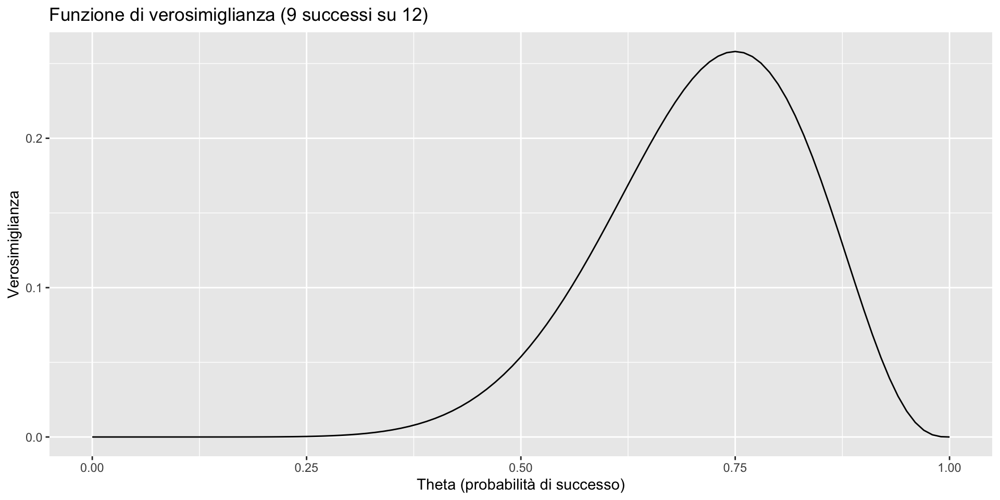
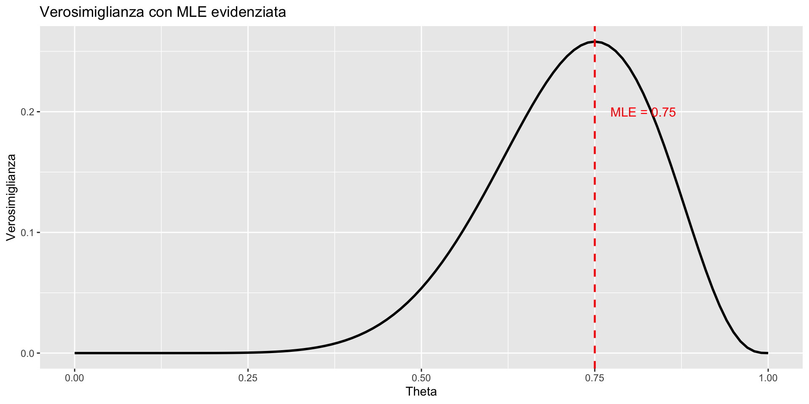
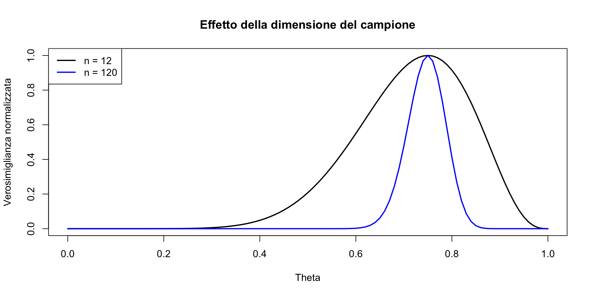
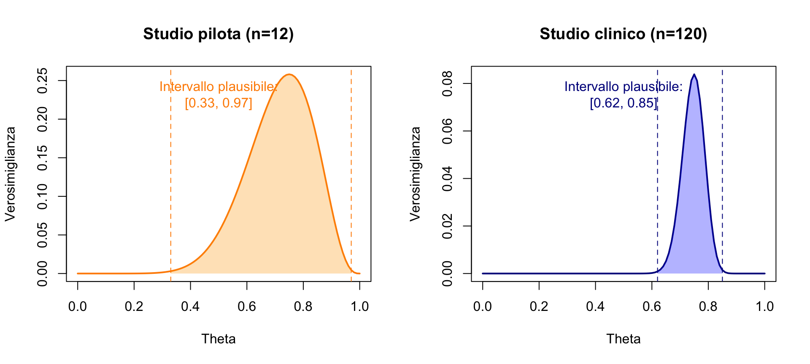
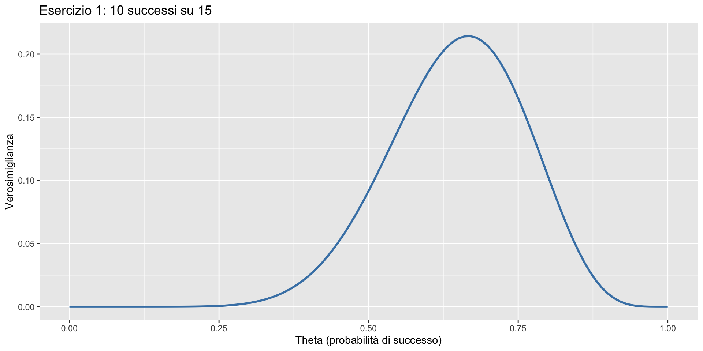
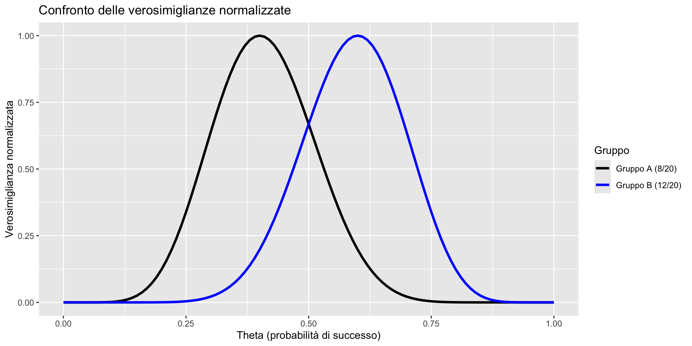
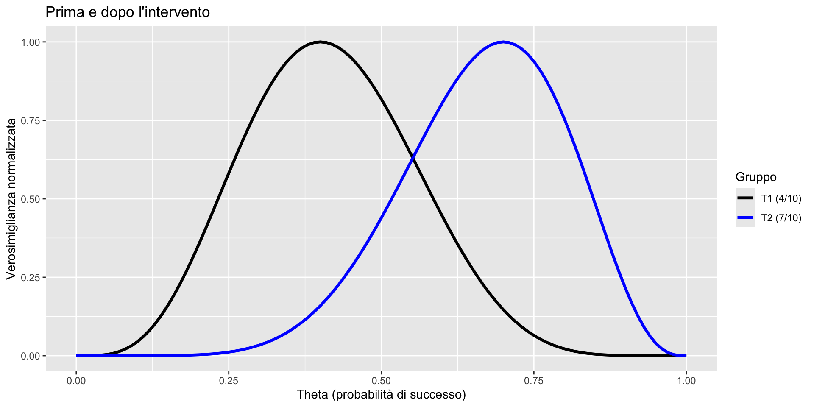
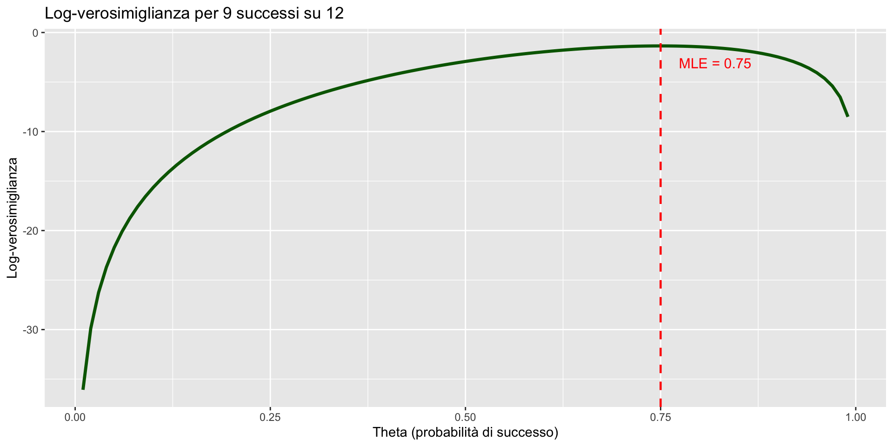

La funzione di verosimiglianza
Calcolare e visualizzare la verosimiglianza in R — Segmento 2
![]()
29 ottobre 2026
Dalla formula al codice
Perché R?
Nel segmento precedente avete calcolato la verosimiglianza a mano per due o tre valori di \(\theta\). Ma la vera potenza della verosimiglianza emerge quando la calcolate per centinaia di valori e la visualizzate come una curva.
Questo è impossibile a mano, ma banale in R. E la curva vi dirà qualcosa che i singoli numeri non possono dire: dove si concentra l’evidenza e quanta incertezza rimane.
Obiettivi
- Calcolare la verosimiglianza passo per passo in R.
- Visualizzare la funzione di verosimiglianza.
- Trovare la stima di massima verosimiglianza.
- Capire come la verosimiglianza cambia con i dati.
Il nostro esempio guida
Scenario di ricerca clinica
Un terapeuta sperimenta un nuovo protocollo breve per ridurre l’ansia. Dopo il trattamento con 12 pazienti, 9 di loro mostrano una riduzione clinicamente rilevante dei sintomi.
Domanda centrale
Alla luce di questi dati, qual è la probabilità vera (\(\theta\)) che questo training sia efficace per un paziente?
Questo semplice scenario racchiude l’essenza del problema inferenziale:
- da un risultato campionario (9/12)
- dobbiamo trarre conclusioni su un parametro della popolazione (\(\theta\)).
Parte 1: Calcolare la verosimiglianza
I nostri dati
Obiettivo:
calcolare e confrontare \(\mathcal{L}(\theta)\) per diversi valori della probabilità di successo \(\theta\).
Dalla probabilità alla verosimiglianza
Per dati binomiali (un insieme di prove Bernoulliane indipendenti: “miglioramento clinicamente rilevante” vs. “assenza di miglioramento clinicamente rilevante”), la distribuzione di probabilità è:
\[ P(Y = y \mid \theta) = \binom{n}{y} \theta^y (1-\theta)^{n-y}. \]
Ma attenzione:
- quando fissiamo \(y=9\) e \(n=12\) (i nostri dati),
- e lasciamo variare \(\theta\),
- la stessa formula diventa la funzione di verosimiglianza:
\[ \mathcal{L}(\theta \mid y=9) = \binom{12}{9} \theta^9 (1-\theta)^{3}. \]
In R, usiamo dbinom(x, size, prob) mantenendo x e size fissi mentre variamo prob.
Calcolo di \(\mathcal{L}(\theta)\) per \(\theta = 0.5\)
Interpretazione:
- avendo osservato 9 successi su 12 prove, la verosimiglianza che \(\theta\) abbia il valore di 0.5 è circa 0.054.
Calcolo di \(\mathcal{L}(\theta)\) per \(\theta = 0.75\)
Interpretazione:
- otteniamo un valore di verosimiglianza più alto;
- \(\theta = 0.75\) è più compatibile con i dati osservati di \(\theta = 0.5\).
Confronto di tre valori
[1] 0.05371094[1] 0.2581036[1] 0.08523251Tra questi tre, \(\theta = 0.75\) ha la verosimiglianza più alta.
Parte 2: la curva di verosimiglianza
L’idea
- Invece di calcolare la verosimiglianza per pochi valori,
- calcoliamola per molti valori di \(\theta\)
- e disegniamo un grafico.
Passo 1: creare una sequenza di valori
Abbiamo 101 valori di \(\theta\) da esaminare.
Passo 2: calcolare la verosimiglianza per ogni valore
Ora che abbiamo creato un vettore theta (che va da 0 a 1), possiamo calcolare l’intera funzione di verosimiglianza in un unico passaggio.
Il calcolo vettoriale in R:
Cosa abbiamo calcolato?
Per ogni valore di \(\theta\), abbiamo la verosimiglianza:
- \(\theta = 0.00\) → \(\mathcal{L} = 0\)
- \(\theta = 0.01\) → \(\mathcal{L} = 0\)
- …
- \(\theta = 0.75\) → \(\mathcal{L} = ?\)
Passo 3: disegnare il grafico
Ora abbiamo tutto ciò che serve per tracciare la curva di verosimiglianza completa.

Leggere il grafico
La curva ci dice:
- valori di \(\theta\) vicini a 0 o 1 sono poco plausibili;
- valori di \(\theta\) vicini a 0.75 sono molto plausibili;
- il picco indica la stima di massima verosimiglianza.
Parte 3: trovare la MLE
Qual è il valore massimo della verosimiglianza?
[1] 0.2581036Questo numero è il valore più alto della curva che abbiamo disegnato.
Ma quale \(\theta\) corrisponde a questo massimo?
Pensiamo alla curva come a una montagna. Vogliamo sapere:
- Quanto è alta la montagna (il valore massimo) ← già fatto;
- Dove si trova la cima (il \(\theta\) corrispondente).
[1] 76Questo numero (nel nostro caso, 76) NON è il valore di \(\theta\). È solo la posizione (indice) nell’elenco dei nostri \(\theta\).
Troviamo il vero valore di \(\theta\)
[1] 0.75Ora abbiamo la risposta. La MLE è \(\hat{\theta} = 0.75\).
Spiegazione con analogia
Immagina di avere:
- una lista di numeri:
theta = [0, 0.01, 0.02, ..., 1.00](101 numeri totali); - una lista di altezze (verosimiglianze):
verosim = [0.000, 0.001, ..., 0.250].
which.max(verosim) ci dice: “Il valore più alto è al 76° posto nella lista”.
Poi prendiamo il 76° valore da theta: è 0.75.
La MLE (Massima Verosimiglianza)
Il risultato \(\hat{\theta}\) = 0.75 è chiamato stimatore di massima verosimiglianza (MLE).
Se abbiamo osservato 9 successi su 12 prove, il valore di \(\theta\) che rende più plausibile (più “verosimile”) questa osservazione è 0.75.
Verifica
Nel caso di 9 successi su 12, la formula di MLE è
\[ \hat{\theta} = \frac{9}{12} = 0.75. \]
La nostra simulazione conferma la formula teorica.
Riassunto in parole semplici
- Cercare il massimo = trovare il punto più alto della curva.
which.max()= ci dice dove si trova quel punto (la sua posizione).theta[posizione]= ci dà il vero valore di \(\theta\).- Risultato = \(\hat{\theta}\) = 0.75 è il valore che massimizza la verosimiglianza.
Aggiungiamo la MLE al grafico
# Creiamo un dataframe con i dati
dati <- data.frame(theta = theta, verosim = verosim)
g2 <- ggplot(dati, aes(x = theta, y = verosim)) +
# Linea della curva di verosimiglianza
geom_line(color = "black", size = 1) +
# Linea verticale rossa tratteggiata alla MLE
geom_vline(xintercept = 0.75, color = "red", linetype = "dashed", size = 0.8) +
# Etichetta del testo
annotate("text", x = 0.82, y = 0.2,
label = "MLE = 0.75", color = "red", size = 4) +
# Titoli degli assi
labs(x = "Theta",
y = "Verosimiglianza",
title = "Verosimiglianza con MLE evidenziata")
Parte 4: Interpretare la larghezza nel contesto clinico
L’incertezza nell’interpretazione clinica
Consideriamo il nostro parametro \(\theta\): probabilità che il trattamento sia efficace per un paziente.
Nel contesto clinico:
- \(\theta > 0.5\) suggerisce che il trattamento funziona meglio del caso;
- \(\theta > 0.7\) suggerisce una buona efficacia;
- \(\theta > 0.9\) suggerisce un’eccellente efficacia.
Le due situazioni a confronto
Scenario 1 (\(n=12\)):
9 successi su 12 (75%) - Studio pilota.
Scenario 2 (\(n=120\)):
90 successi su 120 (75%) - Studio clinico.
Entrambi mostrano la stessa proporzione di successo, ma la certezza è diversa.
Calcolo
Normalizziamo per confrontare
Dividiamo per il massimo (così entrambe hanno picco = 1):
Grafico comparativo

Interpretazione clinica delle due curve
Con n=12 (curva nera):
- Il picco è a 0.75, ma la curva è molto larga.
- Sostanziali porzioni della curva cadono su valori:
- sotto 0.5: il trattamento potrebbe essere inefficace;
- sopra 0.9: il trattamento potrebbe essere eccellente.
- Conclusione clinica: “I dati suggeriscono un’efficacia, ma con molta incertezza”.
Interpretazione clinica delle due curve
Con n=120 (curva blu):
- Il picco è sempre a 0.75, ma la curva è molto stretta.
- Quasi tutta la massa della curva è tra 0.68 e 0.82.
- Conclusione clinica: “Il trattamento mostra un’efficacia moderata con alta certezza”.
Cosa significa per la pratica clinica?

Il messaggio per lo psicologo
La larghezza della funzione di verosimiglianza ci dice quanto possiamo essere certi della nostra stima:
- Curva larga → molta incertezza → studio esplorativo → bisogno di replicazione.
- Curva stretta → poca incertezza → studio conclusivo → basi solide per la decisione.
Il messaggio per lo psicologo
Nella ricerca psicologica, spesso iniziamo con studi pilota (curve larghe) per poi confermare con campioni più numerosi (curve strette).
La verosimiglianza rende visibile questa progressione: non è solo “più dati = meglio” — è “più dati = curva più stretta = meno incertezza su cosa sta succedendo”.
Parte 5: Esercizi
Esercizio 1
Un ricercatore valuta la memoria di 15 partecipanti dopo un training. 10 superano una soglia prestabilita.
Compito:
- Calcola la verosimiglianza per \(\theta = 0.5, 0.6, 0.7\).
- Disegna la curva di verosimiglianza.
- Trova la MLE.
Soluzione Esercizio 1 — Passo 1
[1] 0.09164429[1] 0.1859378[1] 0.2061304\(\theta = 0.7\) ha la verosimiglianza più alta tra i tre valori esaminati.
Soluzione Esercizio 1 — Passo 2
theta <- seq(0, 1, by = 0.01)
verosim <- dbinom(y, n, prob = theta)
# Creazione del dataframe per ggplot
dati <- data.frame(theta = theta, verosim = verosim)
# Grafico con ggplot2
g3 <- ggplot(dati, aes(x = theta, y = verosim)) +
geom_line(linewidth = 1, color = "steelblue") +
labs(
x = "Theta (probabilità di successo)",
y = "Verosimiglianza",
title = "Esercizio 1: 10 successi su 15"
) 
Soluzione Esercizio 1 — Passo 3
La MLE è \(\hat{\theta} = 0.667\), cioè la proporzione osservata di successi. Notate come la curva sia più stretta rispetto all’esempio con \(n = 12\): con 15 partecipanti l’incertezza è già leggermente minore.
Esercizio 2
Due gruppi vengono sottoposti a un test:
- Gruppo A: 8 successi su 20.
- Gruppo B: 12 successi su 20.
Compito: confronta le curve di verosimiglianza.
Soluzione Esercizio 2
theta <- seq(0, 1, by = 0.01)
verosim_A <- dbinom(8, 20, prob = theta)
verosim_B <- dbinom(12, 20, prob = theta)
# Normalizzazione
verosim_A_norm <- verosim_A / max(verosim_A)
verosim_B_norm <- verosim_B / max(verosim_B)
# Creazione del dataframe per ggplot
dati <- data.frame(
theta = rep(theta, 2),
verosim = c(verosim_A_norm, verosim_B_norm),
gruppo = rep(c("Gruppo A (8/20)", "Gruppo B (12/20)"), each = length(theta))
)
# Grafico con ggplot2
g4 <- ggplot(dati, aes(x = theta, y = verosim, color = gruppo)) +
geom_line(linewidth = 1.2) +
scale_color_manual(
values = c("Gruppo A (8/20)" = "black", "Gruppo B (12/20)" = "blue")
) +
labs(
x = "Theta (probabilità di successo)",
y = "Verosimiglianza normalizzata",
color = "Gruppo",
title = "Confronto delle verosimiglianze normalizzate"
) 
Interpretazione Esercizio 2
- MLE Gruppo A: \(\hat{\theta}_A = 8/20 = 0.40\).
- MLE Gruppo B: \(\hat{\theta}_B = 12/20 = 0.60\).
Le curve si sovrappongono parzialmente: c’è una zona (intorno a \(\theta = 0.5\)) in cui entrambe hanno verosimiglianza ragionevole. Questo significa che i dati, da soli, non permettono di concludere con certezza che i due gruppi siano diversi — ma c’è un’indicazione. Con campioni più grandi, le curve si restringerebbero e la sovrapposizione diminuirebbe.
Esercizio 3
Uno studio longitudinale segue lo stesso gruppo:
- Tempo 1: 4 successi su 10.
- Tempo 2: 7 successi su 10 (dopo un intervento).
Domanda: l’intervento ha cambiato \(\theta\) (probabilità di successo in un compito)?
Soluzione Esercizio 3
verosim_T1 <- dbinom(4, 10, prob = theta)
verosim_T2 <- dbinom(7, 10, prob = theta)
# Normalizzazione
verosim_T1_norm <- verosim_T1 / max(verosim_T1)
verosim_T2_norm <- verosim_T2 / max(verosim_T2)
# Creazione del dataframe per ggplot
dati <- data.frame(
theta = rep(theta, 2),
verosim = c(verosim_T1_norm, verosim_T2_norm),
gruppo = rep(c("T1 (4/10)", "T2 (7/10)"), each = length(theta))
)
# Grafico con ggplot2
g5 <- ggplot(dati, aes(x = theta, y = verosim, color = gruppo)) +
geom_line(linewidth = 1.2) +
scale_color_manual(
values = c("T1 (4/10)" = "black", "T2 (7/10)" = "blue")
) +
labs(
x = "Theta (probabilità di successo)",
y = "Verosimiglianza normalizzata",
color = "Gruppo",
title = "Prima e dopo l'intervento"
)
Interpretazione Esercizio 3
- Le curve si sovrappongono parzialmente.
- MLE prima: 0.4, MLE dopo: 0.7.
- C’è evidenza di un cambiamento, ma i campioni sono piccoli.
Con più dati, le curve sarebbero più strette e il confronto più chiaro. Notate che questo è esattamente il ragionamento che sta dietro alla pianificazione di uno studio: scegliete \(n\) grande abbastanza perché le curve dei due tempi si separino chiaramente se l’effetto esiste davvero.
Parte 6: La log-verosimiglianza
Perché il logaritmo?
Quando i campioni sono grandi, la verosimiglianza diventa un numero molto piccolo.
Numeri così piccoli possono creare problemi al computer (il cosiddetto underflow: il numero diventa così piccolo che il computer lo arrotonda a zero).
La soluzione: log-verosimiglianza
Oppure direttamente con log = TRUE:
Numeri come \(-18.7\) sono molto più gestibili di \(0.000000008\).
Grafico della log-verosimiglianza
theta <- seq(0.01, 0.99, by = 0.01) # Evita log(0)
loglik <- dbinom(9, 12, prob = theta, log = TRUE)
# Creazione del dataframe per ggplot
dati <- data.frame(theta = theta, loglik = loglik)
# Calcolo della MLE (massima log-verosimiglianza)
mle_theta <- theta[which.max(loglik)]
# Grafico base
g6 <- ggplot(dati, aes(x = theta, y = loglik)) +
geom_line(linewidth = 1.2, color = "darkgreen") +
geom_vline(xintercept = mle_theta, linetype = "dashed",
color = "red", linewidth = 0.8) +
annotate("text", x = mle_theta + 0.07, y = max(loglik) - 1.75,
label = paste0("MLE = ", round(mle_theta, 3)),
color = "red", size = 4) +
labs(
x = "Theta (probabilità di successo)",
y = "Log-verosimiglianza",
title = "Log-verosimiglianza per 9 successi su 12"
)
Proprietà importante
Il massimo della log-verosimiglianza è nello stesso punto del massimo della verosimiglianza.
Sempre 0.75. Il logaritmo è una funzione monotona crescente, quindi non sposta il punto di massimo.
Riepilogo: comandi R essenziali
| Operazione | Codice R |
|---|---|
| Verosimiglianza binomiale | dbinom(y, n, prob = theta) |
| Log-verosimiglianza | dbinom(y, n, prob = theta, log = TRUE) |
| Sequenza di valori | seq(0, 1, by = 0.01) |
| Trovare il massimo | max(verosim) |
| Posizione del massimo | which.max(verosim) |
Il percorso fin qui
Lezioni 5-6 — Probabilità e aggiornamento bayesiano.
Lezione 8 — Modelli per conteggi: Bernoulli, Binomiale, Poisson.
Lezione 9 — Modelli per misure continue: Normale e Beta.
Lezione 10 — Valore atteso, varianza, funzioni di v.c.
Lezione 11 — Covarianza e correlazione.
Lezione 12 (oggi) — La funzione di verosimiglianza.
Il percorso fin qui
Avete ora tutti i pezzi: sapete descrivere l’incertezza (distribuzioni, momenti), sapete come le variabili si relazionano (covarianza), e sapete come i dati parlano dei parametri (verosimiglianza). Il passo finale è combinare l’informazione dei dati con le conoscenze pregresse: è l’inferenza bayesiana — prior, verosimiglianza e posterior.
Riepilogo concettuale
dbinom()calcola la verosimiglianza binomiale.Creiamo una griglia di valori di \(\theta\) con
seq().Calcoliamo la verosimiglianza per tutti i valori.
Il grafico mostra la plausibilità relativa di questi valori.
La MLE è il picco della curva.
Più dati → curva più stretta → meno incertezza.
Il messaggio da portare a casa
La funzione di verosimiglianza trasforma i dati in un profilo di evidenza per il parametro di interesse:
- stimare con quanta evidenza un trattamento sia efficace;
- confrontare teorie o gruppi in modo quantitativo;
- valutare l’incertezza nelle stime di cambiamento nel tempo.
Nella prossima lezione vedremo come la verosimiglianza si combina con le credenze iniziali per produrre la distribuzione a posteriori — il cuore dell’inferenza bayesiana.
Per la prossima lezione
Materiale di studio: https://ccaudek.github.io/utet-prob/
Prossimo argomento:
Prior, verosimiglianza e posterior: come combinare conoscenze pregresse con i dati.